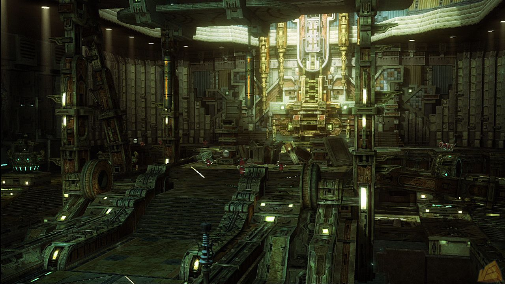
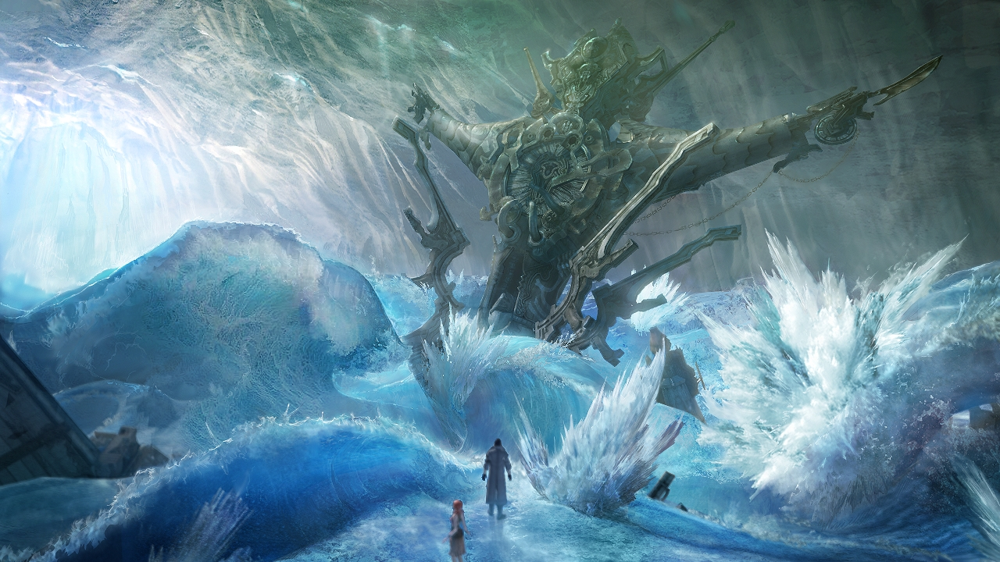
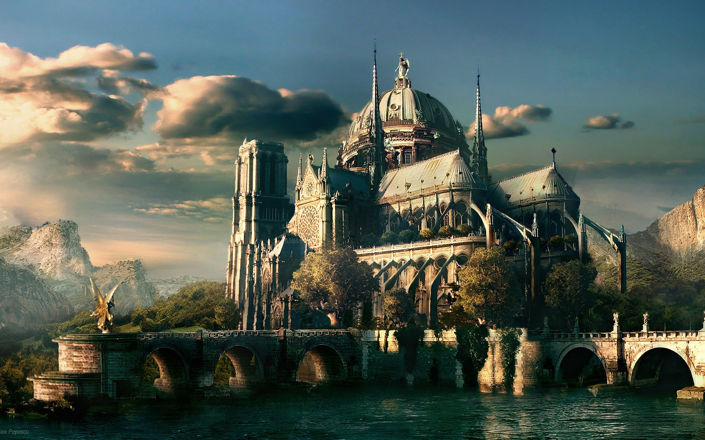

Final Fantasy XIII is the story of the Fal'Cie, godlike beings created from crystals and residing within them. Individuals marked by the Fal'Cie for a greater destiny are known as l'Cie, and are granted power to aid them in fulfilling the tasks set by the Fal'Cie. These tasks are revealed through focuses, visions that the l'Cie experience. L'Cie have a limited amount of time in which to complete their focus, and if they fail they become beasts known as Cie Corpses. The game takes place in two locales, namely Pulse and Cocoon. Both of these have their own Fal'Cie, who have clashed many times in the past. The planet Pulse is relatively primitive, with its inhabitants being mainly tribal communities. Pulse is home to strange and diverse wildlife, with dinosaur-like animals travelling its plains and dragons flying overhead.
Cocoon on the other hand is a technologically advanced world created by the Fal'Cie thirteen centuries ago. It floats high above the surface of Pulse, with its Fal'Cie providing all that humanity requires to survive. Cocoon is densely populated, and ruled over by a theocratic government known as Sanctum. Sanctum prohibits Cocoon citizens having contact with Pulse, and quarantines any who do with the aid of their army PSICOM. Sometime before the beginning of the game, Pulse's Fal'Cie is transported to Cocoon, contained within a structure that comes to reside in the coastal city of Bowdam, where Serah, Lightning and Team Nora reside. Serah Fannon, younger sister to protagonist Lightning and romantically involved with Snow Villiers, comes into contact with Pulse's Fal'Cie and incidentally becomes a l'Cie herself.
The game begins with protagonist Lightning, a former Sergeant in PSICOM, infiltrating a train which is carrying prisoners for quarantine. With the aid of Sazh Katzroy, an acquaintance from Lightning's military service, she manages to stop the train and disrupt the transport of prisoners. However this does not appear to be her ultimate goal, she seems to be searching Hanged Edge (the location where prisoners are transferred through) for Pulse's Fal'Cie, likely seeking aid for her younger sister. Team Nora, a vigilante justice group led by Snow Villiers, join the battle to save the prisoners and inadvertently come across Oerba Dia Vanille and Hope Estheim (who's mother falls in the battle taking place, leading to his resentment of Snow). Through a chain of events Lightning, Sazh, Snow, Vanille and Hope find Pulse's Fal'Cie, and they themselves all become l'Cie.
In the beginning of Final Fantasy XIII, all of Pulse is pretty outraged with Cocoon, and they organize an assault against Cocoon, or which Lightning leads. This leads to a quasi-revolution. It's said that Cocoons strengths as a fortress are susceptible to infiltration, which furthermore is frightening to the citizens of Cocoon as this could open up Cocoon to possibly falling from it's place in the sky. Later they meet up with Oerba Yun Fang, another l'Cie who is working for Cocoon's Sanctum along side Cid Raines.